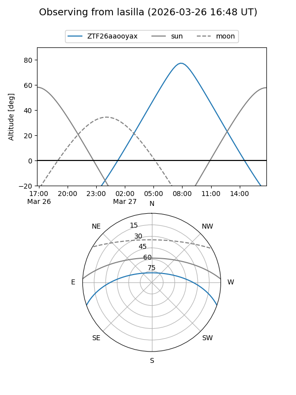
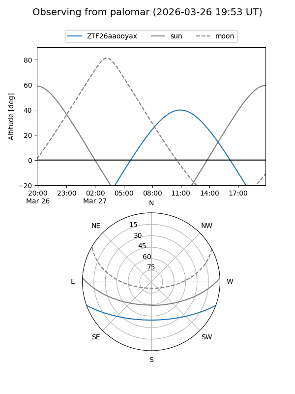

ZTF26aaooyax
Target ZTF26aaooyax at 2026-03-26 12:56
Aliases and brokers:
FINK: link
Lasair: link
ALeRCE: link
alt names
ZTF26aaooyax (ztf,fink_ztf)
Coordinates:
equatorial (ra, dec) = 231.9035,-16.62721
equatorial (HMS+DMS) = 15:27:36.84,-16:37:37.94
galactic (l, b) = (348.3901,+32.12994)
Flags:
Photometry:
last ztfg=17.49
1 ztfg detections
Lightcurve
Visibility


Additional plots